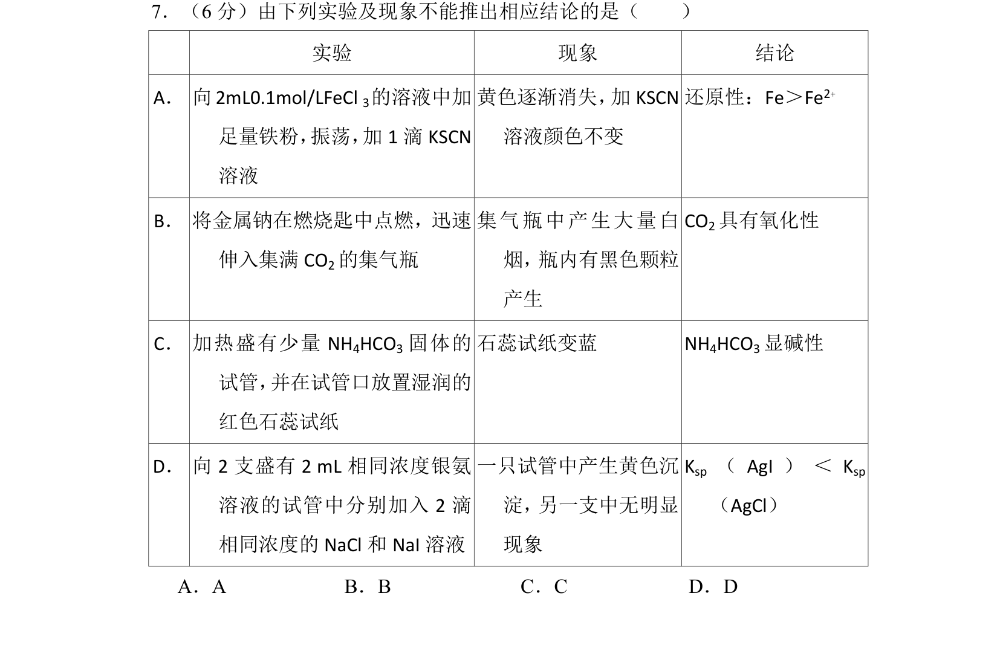
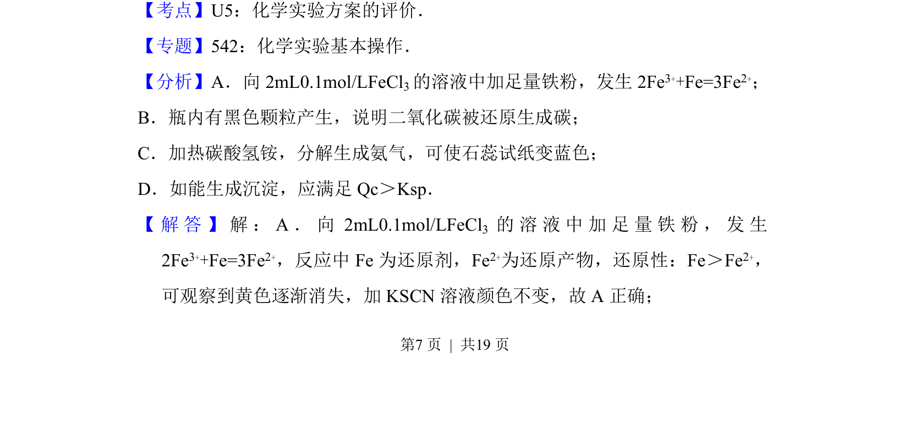
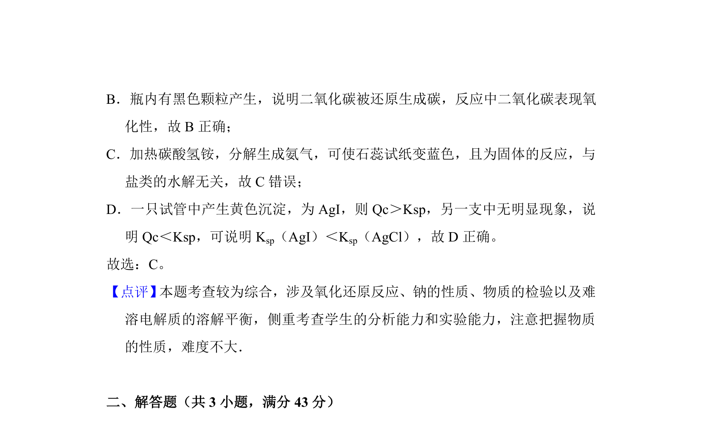

考点：化学实验评价 氧化还原反应 沉淀溶解平衡

根据实验现象和反应原理判断结论的正确性


📄 原 PDF 第 7 页：
素材/真题/吉林/2008-2024·（吉林）化学高考真题/2017年高考化学试卷（新课标Ⅱ）（解析卷）.pdf
7．（6分）由下列实验及现象不能推出相应结论的是（ ） 实验 现象 结论 A． 向2mL0.1mol/LFeCl 3的溶液中加 足量铁粉， 振荡， 加1滴KSCN 溶液 黄色逐渐消失， 加KSCN 溶液颜色不变 还原性：Fe＞Fe2+ B． 将金属钠在燃烧匙中点燃，迅速 伸入集满CO 2的集气瓶 集气瓶中产生大量白 烟， 瓶内有黑色颗粒 产生 CO2具有氧化性 C． 加热盛有少量NH 4HCO3固体的 试管， 并在试管口放置湿润的 红色石蕊试纸 石蕊试纸变蓝 NH4HCO3显碱性 D． 向2支盛有2 mL相同浓度银氨 溶液的试管中分别加入2滴 相同浓度的NaCl和NaI溶液 一只试管中产生黄色沉 淀， 另一支中无明显 现象 Ksp （AgI） ＜K sp （AgCl） A．A B．B C．C D．D
【考点】U5：化学实验方案的评价．菁优网版权所有 【专题】542：化学实验基本操作． 【分析】A．向2mL0.1mol/LFeCl 3的溶液中加足量铁粉，发生2Fe 3++Fe=3Fe2+； B．瓶内有黑色颗粒产生，说明二氧化碳被还原生成碳； C．加热碳酸氢铵，分解生成氨气，可使石蕊试纸变蓝色； D．如能生成沉淀，应满足Qc＞Ksp． 【 解 答 】 解 ：A． 向2mL0.1mol/LFeCl3 的 溶 液 中 加 足 量 铁 粉 ， 发 生 2Fe3++Fe=3Fe2+，反应中Fe为还原剂，Fe 2+为还原产物，还原性：Fe＞Fe 2+， 可观察到黄色逐渐消失，加KSCN溶液颜色不变，故A正确；